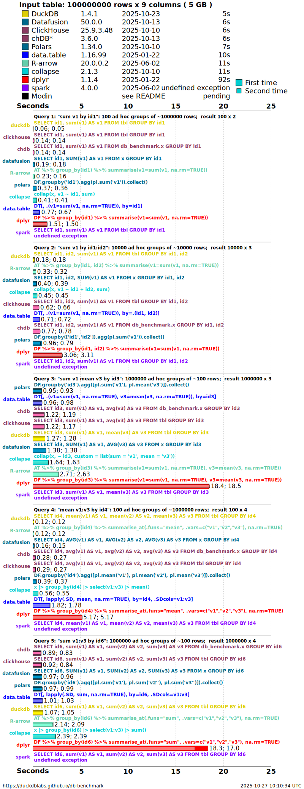
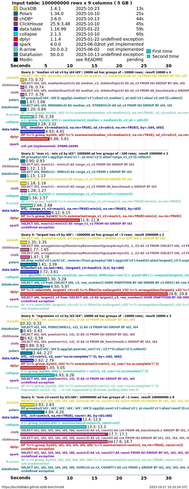
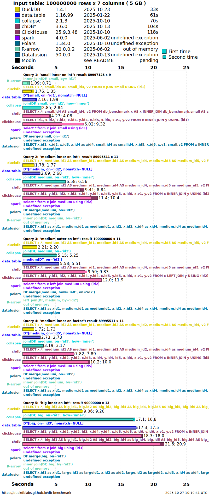

library(dplyr)
survey |>
group_by(region) |>
summarise(avg_income = mean(income), n = n()) |>
arrange(desc(avg_income))
Note
This is Part 2 of Fast & Big Data in R. Part 1 was about getting data in and out of RAM — serialization (RDS, qs2, fst) and out-of-memory storage (Parquet/Arrow, DuckDB). This part is about computing on data: the fast R toolkit for wrangling, and which operations you can push out-of-memory versus which ones must be pulled into RAM.
Where to start: the fast-R ecosystem
A good map of the high-performance R ecosystem is the fastverse — a meta-package (and a loose “verse”) that bundles and version-manages the packages built for speed through heavy use of compiled C/C++ code. Its four core packages are:
- data.table — an enhanced
data.framewith a tersedt[i, j, by]grammar: aggregation, update-by-reference, reshaping, (rolling) joins, and the fastest CSV reader/writer in R. - collapse — fast grouped and weighted statistical computations, time-series/panel transforms, joins and pivots, working on vectors, matrices, and data frames alike.
- kit — parallel row-wise statistics and vectorized
switch/nif(the fastcase_when). - magrittr — the pipe.
The fastverse positions these as performance-oriented complements to the tidyverse. For this seminar we treat dplyr as the readability baseline and compare four faster or bigger-than-RAM routes against it:
| Tool | Lives where | Reach for it when… |
|---|---|---|
| dplyr | in RAM | readability is the priority; data fits comfortably |
| data.table | in RAM | you want maximum in-memory speed and concise code |
| collapse | in RAM | grouped/weighted statistics and panel data, composable with the above |
| Arrow / Parquet | on disk | data is larger than RAM and the work is filter + aggregate + join |
| DuckDB | on disk | data is larger than RAM and you need full SQL, including windows and sorting |
The same job, five ways
To make the starting points concrete, here is one small task — average income and record count by region, sorted — written in each tool. The data is the survey-like frame from Part 1 (region, country, year, income, employed, …).
dplyr — the readability baseline
Start here: https://dplyr.tidyverse.org.
data.table — maximum in-memory speed
library(data.table)
setDT(survey) # convert in place, no copy
survey[, .(avg_income = mean(income), n = .N), by = region][order(-avg_income)]The [i, j, by] form reads as “rows i, compute j, grouped by by”, and chains with [...][...]. Updates can happen by reference (:=) with no copy.
Start here: the Introduction to data.table vignette.
collapse — fast grouped statistics
library(collapse)
survey |>
fgroup_by(region) |>
fsummarise(avg_income = fmean(income), n = fnobs(income)) |>
roworder(-avg_income)collapse exposes a family of f* functions (fmean, fsum, fmedian, fnobs, …) that are grouped-aware and vectorized in C++. It also plays nicely as a backend — e.g. fastplyr and timeplyr give a tidyverse-style API on top.
Start here: https://sebkrantz.github.io/collapse/.
Arrow / Parquet — out-of-memory, on the fly
arrow lets you write dplyr against a Parquet file (or a folder of them) that is never fully loaded into RAM. The query is streamed over the file; only the small result is materialized when you call collect().
library(arrow)
library(dplyr)
ds <- open_dataset("survey_parquet/") # a lazy view over files on disk
ds |>
group_by(region) |>
summarise(avg_income = mean(income), n = n()) |>
arrange(desc(avg_income)) |>
collect() # only the small summary enters RAMStart here: the Working with Arrow Datasets and dplyr vignette.
DuckDB — out-of-memory SQL engine
DuckDB is an embedded analytical database. It reads Parquet directly, spills to disk when data exceeds RAM, and speaks both SQL and dplyr.
library(duckdb)
library(dplyr)
con <- dbConnect(duckdb())
# Pure SQL — reads Parquet directly, larger-than-RAM
dbGetQuery(con, "
SELECT region, AVG(income) AS avg_income, COUNT(*) AS n
FROM read_parquet('survey_parquet/*.parquet')
GROUP BY region
ORDER BY avg_income DESC
")
# …or the same query through dplyr, via a view
dbExecute(con, "CREATE VIEW survey AS
SELECT * FROM read_parquet('survey_parquet/*.parquet')")
tbl(con, "survey") |>
group_by(region) |>
summarise(avg_income = mean(income), n = n()) |>
arrange(desc(avg_income)) |>
collect()
dbDisconnect(con, shutdown = TRUE)Start here: the DuckDB R API. For a zero-friction drop-in dplyr backend powered by DuckDB, see duckplyr.
Not all wrangling is equal
The crucial idea for big data is that wrangling operations are not all the same kind of computation. Some can be done a chunk at a time and never need the whole dataset in memory; others need an entire column — or an entire group — present at once.
Streaming (reducing) operations — easy to push out-of-memory
These work row-by-row or chunk-by-chunk, and partial results combine. An engine can stream the file past a fixed-size buffer and never hold it all:
filter/select— keep some rows / columns.mutatewithifelse,case_when/nif, arithmetic — each row is independent.- group-by aggregation with combinable statistics —
sum,count,min,max,mean(= sum ÷ count),var/sd(via sums of squares). A running total over chunks gives the right answer. - equi-joins — hash or sort-merge, and the build side can spill to disk.
melt/pivot(reshape long ↔︎ wide) — mostly a re-mapping of cells.
Because these shrink the data and combine cleanly, both Arrow and DuckDB run them out-of-memory with ease.
Whole-vector & window operations — must materialize in RAM
These need an entire column, or an entire partition, resident at once because the result of one element depends on the others:
- sorting the whole table (
arrange) — a global order. - exact
median/ quantiles — you must see every value of a group; they do not combine across chunks the way a sum does. - window functions —
lag/lead,cumsum/cumulative,rank,row_number, rolling windows — each needs ordered neighbours or a running state across the partition. distinctover the whole table — needs global bookkeeping.
This is the limit the user runs into: a sum can be computed incrementally, but a median or a lag requires the whole vector in RAM. You either fit it in memory, or the engine must spill it to disk.
What each engine does with them
| Operation | Combines across chunks? | Arrow dataset (acero) | DuckDB |
|---|---|---|---|
filter, select |
✅ | ✅ streams | ✅ streams |
mutate (ifelse, case_when) |
✅ | ✅ streams | ✅ streams |
group-by sum/mean/count/min/max |
✅ | ✅ streams | ✅ streams |
equi-join |
✅ | ✅ | ✅ spills to disk |
melt / pivot |
✅ | ⚠️ partial | ✅ |
arrange whole table |
❌ | ❌ collect() first |
✅ out-of-core sort |
exact median / quantile |
❌ | ❌ collect() first |
✅ (within groups) |
window: lag, cumsum, rank, rolling |
❌ | ❌ collect() first |
✅ SQL window fns |
The practical takeaways from Table 2:
- Arrow implements the streaming bucket beautifully but hands the whole-vector bucket back to you — call
collect()to bring (a now much smaller) result into RAM, then finish with collapse or data.table. - DuckDB goes further: it has SQL window functions and out-of-core sort/aggregation that spill to disk, so it can do many whole-vector operations larger-than-RAM — at the cost of disk I/O.
- Neither escapes the fundamental rule: a median or a window needs its values present. The only question is whether they sit in RAM or spill to disk.
NoteDuckDB’s window functions
DuckDB implements the full SQL window-function family — ranking and positional functions such as row_number(), rank(), dense_rank(), lag(), lead(), first_value(), last_value(), nth_value(), ntile(), cume_dist() and percent_rank(), plus any aggregate (sum, avg, …) evaluated over an OVER (PARTITION BY … ORDER BY …) clause. These are precisely the whole-vector operations above: to evaluate them DuckDB must buffer each partition, which makes them its most memory-intensive workload — and, as Section 4.3 shows, the area it has optimised most aggressively. Full list and syntax: https://duckdb.org/docs/current/sql/functions/window_functions.
TipThe pattern that scales
Push the reducing operations out-of-memory first — filter → aggregate → join in Arrow or DuckDB — to shrink the data to something that fits in RAM. Then collect() and do the ordered / window work in-memory with collapse or data.table, which are the fastest tools once the data is small enough to hold.
What the benchmarks say
Three benchmarking sources are worth bookmarking. Treat all benchmarks as directional — exact numbers depend on hardware, data shape, cardinality, and versions — but the broad ordering is stable.
Reference suites
- fastverse — Benchmarks wiki — https://github.com/fastverse/fastverse/wiki/Benchmarks. A curated index of community benchmarks: collapse vs dplyr, collapse vs data.table joins, rolling-window functions, and collapse/arrow/data.table comparisons. Start here for the in-memory fast-R picture.
- Adrian Antico — Benchmarks — https://github.com/AdrianAntico/Benchmarks#background. Compares data.table, collapse, DuckDB (and Python’s Polars/Pandas) across eight operations — aggregation, melt, cast, windowing (lag), union, left/inner joins, and filtering — on realistic datasets from 1M to 1B rows. Useful for seeing how the ranking shifts as data grows.
- DuckDB Labs — Database-like ops benchmark — https://duckdblabs.github.io/db-benchmark/. The canonical group-by / join benchmark, run at 0.5 GB, 5 GB, and 50 GB, comparing DuckDB, data.table, dplyr, collapse, Arrow, Polars, Pandas, ClickHouse, Spark, and more.
db-benchmark at 5 GB: sum, median & join
The figures below are the group-by and join results at 5 GB (100 million rows) on a 16-core / 32 GB machine. They make the streaming-vs-whole-vector distinction from Section 3 visible: a plain sum is fast for nearly every tool, the median (which can’t combine across chunks) spreads the field out, and the join — the other workhorse database operation — shows how the engines cope when two large tables must be matched.

q1: sum v1 by id1, is the simple sum benchmark; lower panels add more grouping keys and columns. Bars are seconds (shorter is faster); each solution reports a cold “first run” and a warm “second run”. A plain sum streams, so most engines finish quickly. Source: DuckDB Labs db-benchmark.

q6: median v3, sd v3 by id4, id5, is the median benchmark. Because an exact median needs every value of each group in memory, it stresses the engines far more than a sum — and is where some solutions slow sharply, spill to disk, or fail. Source: DuckDB Labs db-benchmark.

For the full matrix — other cardinalities, NA handling, pre-sorted data, and the 0.5 GB and 50 GB runs — see the live results at https://duckdblabs.github.io/db-benchmark/.
NoteReading these the GeoPov way
Compare Figure 1 and Figure 2 side by side. The sum is cheap and streamable, so the choice of tool barely matters — push it out-of-memory with Arrow or DuckDB and move on. The median is the expensive, whole-vector operation: here the engine and its memory strategy decide whether the job finishes in seconds, spills to disk, or runs out of memory. The join (Figure 3) sits in between — it streams and can spill, so DuckDB and data.table stay fast even at 5 GB. That is exactly the trade-off to plan for in larger-than-RAM poverty-data pipelines.
DuckDB performance over time
To close, a look at how fast the out-of-memory engine itself is getting. DuckDB’s Benchmarks over time post tracks its own benchmark suite across three years of releases (v0.2.7 in June 2021 through v1.0 in June 2024): 3–25× faster overall, while handling roughly 10× larger datasets on the same hardware — the payoff of default multi-threading, parallel data loading, and larger-than-memory sort / aggregate / join / window support. Tellingly, the single biggest gain — about 25× — is in window functions, the hardest whole-vector workload from Section 3.
All of the interactive figures from that post are reproduced in the single tabset below, rendered live from DuckDB’s own published benchmark data. Switch workloads with the tabs; click a legend entry to hide a series, double-click to isolate it, and drag to zoom.
Figure source. Every chart in this tabset is reproduced from DuckDB Labs, Benchmarks over time (26 June 2024, by Alex Monahan & Hannes Mühleisen), and is rendered directly from that article’s published benchmark data. © DuckDB Labs. See the original article for the full methodology, version history, and commentary.
Full article, methodology, and the original interactive charts: DuckDB — Benchmarks over time (26 June 2024).
Read more
- fastverse: https://fastverse.org/fastverse/
- data.table: https://rdatatable.gitlab.io/data.table/
- collapse: https://sebkrantz.github.io/collapse/
- Arrow for R: https://arrow.apache.org/docs/r/
- DuckDB R API: https://duckdb.org/docs/api/r · duckplyr: https://duckplyr.tidyverse.org/